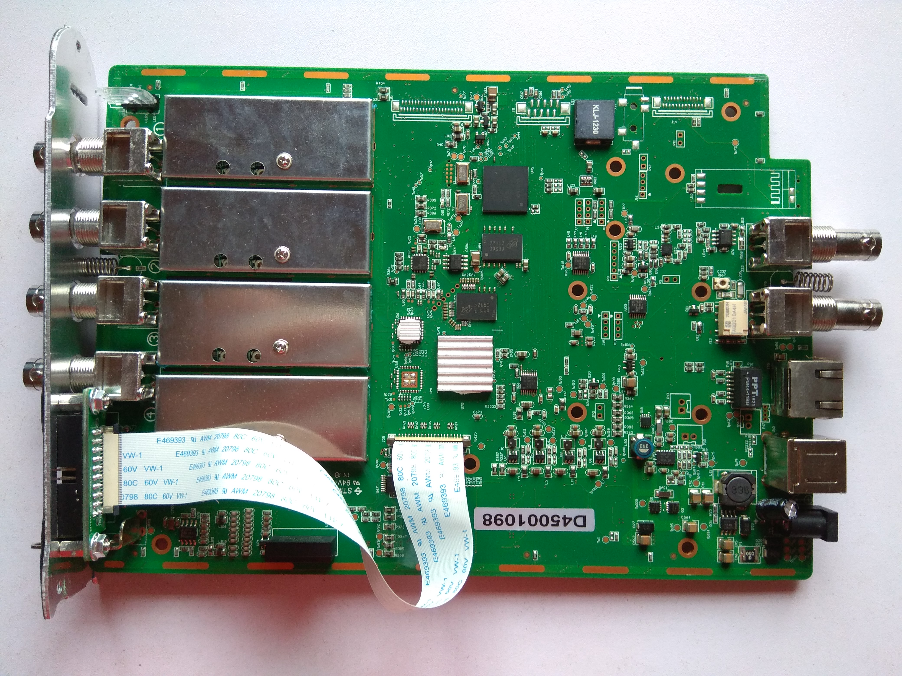

Hantek DSO3254A¶

Hantek DSO3254A¶
| Status | planned |
| Channels | 4 analog, 16 digital |
| Samplerate | 250MHz |
| Samplerate (state) | — |
| Triggers | edge, pulse, video, slope, timeout, external |
| Min/max voltage | -0.5V — 400V |
| Memory | 128MSamples per channel |
| Compression | none |
| Website | hantek.com |
The Hantek DSO3254A is a USB-based signal acquisition device. It has 4 analog channels with 250MHz bandwidth and sampling rate of 1GSa/s. It comes with 16 channel logic analyzer with a maximum sampling rate of 250MHz and an arbritary waveform generator 200MSa/s.
See Hantek DSO3254A/Info for more details (such as lsusb -v output) about the device.
Hardware¶
- S3C2416XH-40 System Controller (400 MHz ARM926EJ with 48 MHz and 12 MHz oscillators with 32.768 kHz RTC oscillator)
- D9SBJ System Memory (MT47H32M16NF-25E - 400 MHz 32MB x 16 DDR2-800)
- D9RZH Acquisition Memory (MT47H64M16NF-25E - 400 MHz 64MB x 16 DDR2-800)
- K9F1G08U0E 128MB x 8 NAND Flash
- 24L64 I2C EEPROM
- DM9000AEP LAN Controller
- USB Wi-Fi Module (optional)
- USB Hub (optional)
- XC6SLX16FTG256 Control FPGA (under heatsink - has JTAG)
- 1 GSPS 8-bit Quad ADC (under heatsink - Analog Devices?)
- ADF4905 Timebase Generator PLL (with 10 MHz reference oscillator)
- LTC2601 x2 (?) 12 Bit Offset DAC
- DAC902E 165 MSPS 12 Bit Waveform Generator DAC
- 74HC595 Channel Relay Switching (1 per channel)
- 74HC595 Offset Voltage Switching
- 74HC595 Trigger Source Selection
- 74HC4051 Offset Voltage Switching
Photos¶


{kind=link}
{kind=link}
{kind=link}
{kind=link}
Communication Protocol¶
Using the ethernet port of the DSO3254A the SCPI protocol is utilized for communication. The general format of the protocol is described within the manual SCPI Protocol Documentation . Hereinafter more detailed description based on experiments is given.
The official application provided by the vendor uses the following three commands in a loop to continously get data from the device.
- SETUp:ALL?
- SOURce:SETUp:ALL?
- WAV:DATA:DISP
The first query will be responded with current settings of the analog channels, the time base, the different trigger settings and the settings for the digital channel aka logic analyzer.
The second query will be responded with current settings of the integrated signal generator.
The last command will be responded with current acquisition data. Interesstingly this query doesn't follow the common scheme for queries, which are terminated by a question mark.
All frames are terminated by ASCII encoded '\n' (newline).
According to the description of the manual a data frame starts with '#' followed by the amount of characters which will contain the amount of bytes transferred. Unfortunatly there seems to be a bug here as a data frame consists of a header, which should be all ASCII encoded characters, and the samples, which are binary encoded. However during the experiments it turns out, that an empty data acquisition frame contains the valid '#' followed by an ASCII encoded '9', but all other 'characters' are plain binary 0x00. The 128 bytes of the header should always be ASCII encoded.
So an invalid encoded response header looks like
#9..............................................................................................................................
where a more valid encoded response header looks like
#9000003317110000032000000000000050-050000000005.0e-015.0e-011.0e-021.0e-0211002.000e+05000001..................000000..........
Here the '.' are plain binary 0x00 instead of ASCII encoded 0x30 (which would be '0'). Let's interpret the more valid encoded response header.
- 000003317 is the amount of payload bytes including header in this frame without '#9000003317'
- 1 is the current operating status
- 1 is the trigger status
- 000003200 amount of bytes total (so the amount of data bytes of this acquisition, depends on memory depth)
- 000000000 amount of bytes already uploaded in this acquisition (so none here, this is the first frame)
- 0050 is the "offset" of analog channel 1, the unit is digits, visible screen is from -100 digits to +100 digits (the unit is different from that of the manual)
- 0-50 is the "offset" of analog channel 2
- 0000 is the "offset" of analog channel 3
- 0000 is the "offset" of analog channel 4
- 5.0e-01 is the "scale" of analog channel 1, the unit is V/div
- 5.0e-01 is the "scale" of analog channel 2
- 1.0e-02 is the "scale" of analog channel 3
- 1.0e-02 is the "scale" of analog channel 4
- 1 means channel 1 is enabled
- 1 means channel 2 is enabled
- 0 means channel 3 is disabled
- 0 means channel 4 is disabled
- 2.000e+05 is the sampling rate in samples/seconds
- 000001 something about multiple sampling..., #fixme What does this mean?
- ......... this represents the current trigger time frame. As can been seen it is all binary 0x00 instead of ASCII '0', #fixme What does this mean?
- ......... something about aquistion time..., #fixme What does this mean?
- 000 is the ASCII encoded representation of what digital channels of POD 1 are enabled, here none, if digital channels D0 to D7 are enabled this is '255'
- 000 is the ASCII encoded representation of what digital channels of POD 2 are enabled, here none, if digital channels D8 to D15 are enabled this is '255'
- ......... reserved bits. As can be seen it is all binaray 0x00 instead of ASCII '0'
- . version, also encoded as binary instead of ASCII '0', #fixme What does this mean?
After the header, acquired data of the enabled channels will follow as plain binary values. The values of the analog channels are signed byte values, meaning that values in the range from 0x80 to 0xFF are negative. To calculate the voltage value accordingly to the binary value given, the formula is as follows. voltage = ((raw - offset) * (1/25) * scale * probe) Where
- voltage is the real world value
- raw is the signed byte value from the data frame, unit is digits
- offset is the offset of the analog channel, unit is digits
- (1/25) is a correctional factor. This comes from the fact that a div of the "screen" does have 25 digits, unit is 1/(digits/div)
- scale is the scale of the analog channel, unit is Volt/div
- probe is the scale of the probe (x1 or x10, for the probes shipped with the scope), unit is 1
So the formula and the units for a better understanding
voltage = ( raw - offset ) * (1 / 25 ) * scale * probe
[V] = ([digits] - [digits]) * [1 / (digits / div)] * [V / div] [1]
For digital channels the binary value of the frame represents the bit-pattern of the digital channels enabled.
If all channels are enabled, than the data in a frame is arranged as follows:
- Samples of analog channel 1
- Samples of analog channel 2
- Samples of analog channel 3
- Samples of analog channel 4
- Samples of digital channels D0-D7
- Samples of digital channels D8-D15
For a memory depth of 1600 Samples, there is only one frame to transfer. If memory depth is increased, then multiple frames may need to be transfered to get all the samples out of the memory. Each frame can have a maximum size of 12128 bytes including '#9'. The amount of bytes already transfered is sent with each frame. So it is quite easy to keep track of the frames. Also the total amounts of bytes is given with each frame. This is indeed the number of samples requested, by the given memory depth value. So maximum is 128MSamples multiplied with the amount of channels enabled.
The maximum amount of channels enabled is 6. This is because digital channels D0-D7 are packed as one byte, same for digital channels D8-D15. So the maximum value of samples to transfer is 768MSamples, if all channels are enabled. From experiments it can be stated that this amount of samples take quite a long time to be transfered, as 64000 frames (with 12000 payload bytes) has to be received.